Fase de grupos
Os times se enfrentam dentro de chaves e os melhores avançam para a fase decisiva.
O blog que traduz o universo dos e-sports para quem está começando e para quem vive o competitivo. Aqui você acompanha os principais campeonatos, entende como funcionam os jogos mais disputados e conhece as organizações e jogadores que fazem história.
Os esportes eletrônicos reúnem milhões de espectadores no mundo todo, com transmissões ao vivo, premiações milionárias e torcidas apaixonadas. O Blog E-Sports organiza esse conteúdo em três eixos: campeonatos, para saber quando e como acompanhar; jogos, para entender as regras e a estratégia de cada título; e times, para conhecer as equipes e os profissionais por trás das jogadas.
Nossa proposta: informação clara, organizada e feita com paixão por quem joga e assiste.
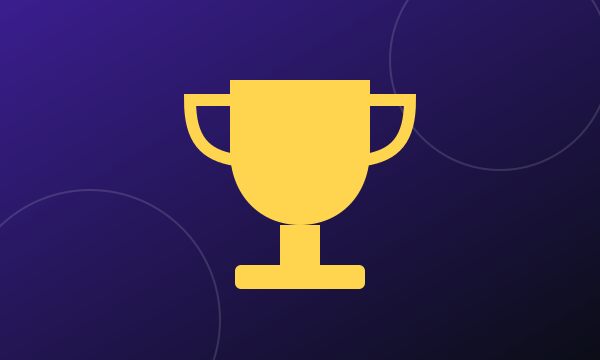
Mundiais, majors e ligas nacionais: formatos, calendário e como assistir.
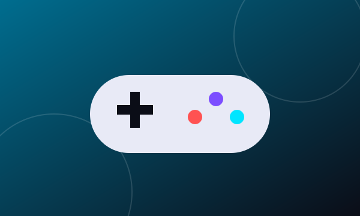
League of Legends, Counter-Strike 2, Valorant e mais: gêneros, objetivos e estratégias.
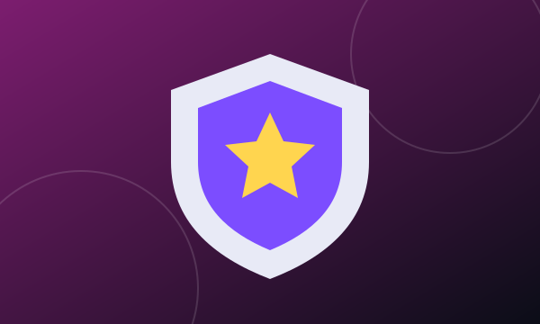
Organizações brasileiras, funções dentro das equipes e a rotina de um atleta.
Do cenário local ao mundial, os torneios são o coração dos e-sports. Conheça os principais formatos e saiba o que esperar de cada etapa.
| Jogo | Competição | Característica |
|---|---|---|
| League of Legends | Worlds e CBLOL | Mundial anual e liga nacional brasileira |
| Counter-Strike 2 | Majors | Torneios de maior prestígio do jogo |
| Valorant | VCT e Champions | Circuito oficial com etapas regionais e final mundial |
| Dota 2 | The International | Conhecido pelas grandes premiações |
| Free Fire | Liga Brasileira | Forte presença no público mobile |
Os times se enfrentam dentro de chaves e os melhores avançam para a fase decisiva.
Em eliminação simples ou dupla, uma derrota pode tirar a equipe da disputa ou mandá-la para a chave inferior.
Séries melhor de cinco, arenas lotadas e transmissão para milhões de pessoas.
Dica: confira sempre o calendário oficial de cada organizadora, pois datas e formatos podem mudar a cada temporada.
Cada título tem regras, ritmo e estratégia próprios. Veja os gêneros mais populares do cenário competitivo e o que diferencia cada um.
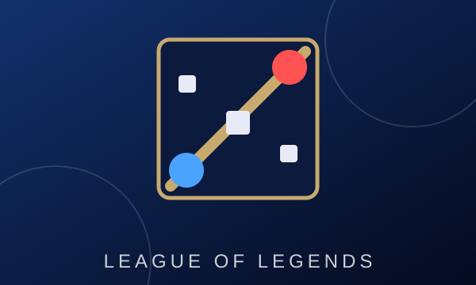
Duas equipes de cinco jogadores disputam o controle do mapa para destruir a base inimiga. Exige comunicação, leitura de jogo e domínio de campeões.
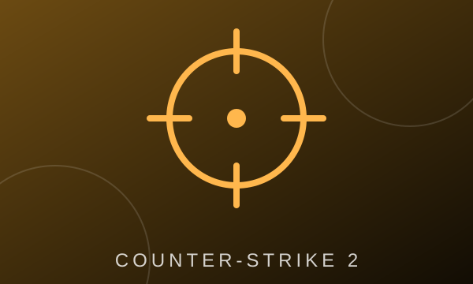
Ataque contra defesa em rodadas curtas. A economia de armas e o posicionamento são tão importantes quanto a mira.
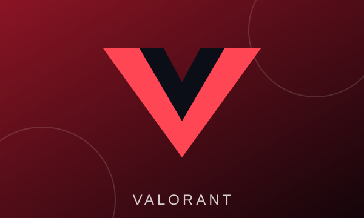
Une tiro tático e habilidades de agentes. Cada função, como duelista ou sentinela, tem papel definido na equipe.
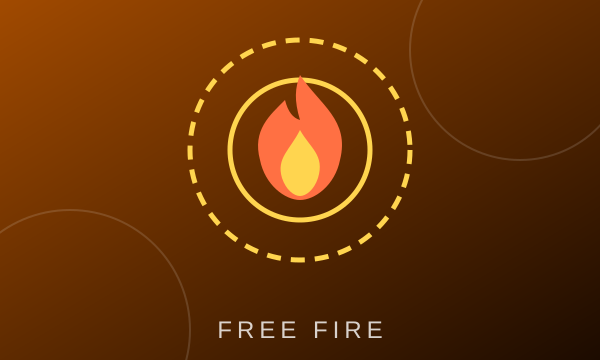
Partidas rápidas com dezenas de jogadores em uma ilha que encolhe. Muito popular no Brasil e jogado em celulares.
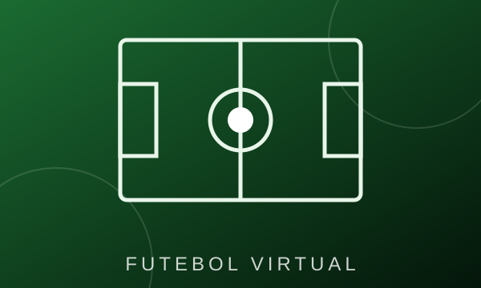
Versão virtual do esporte mais popular do país, com torneios individuais e por equipes.
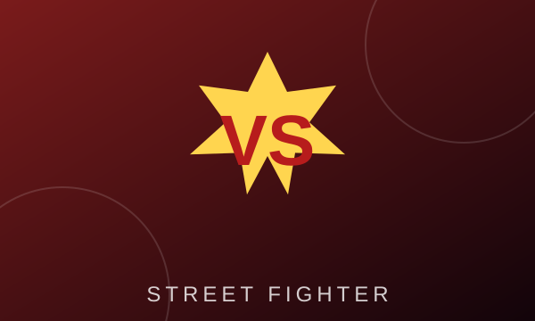
Duelos um contra um que valorizam reflexos, combos e leitura do adversário.
Por trás de cada vitória existe uma estrutura profissional: jogadores, comissão técnica, analistas e uma organização que investe no projeto.
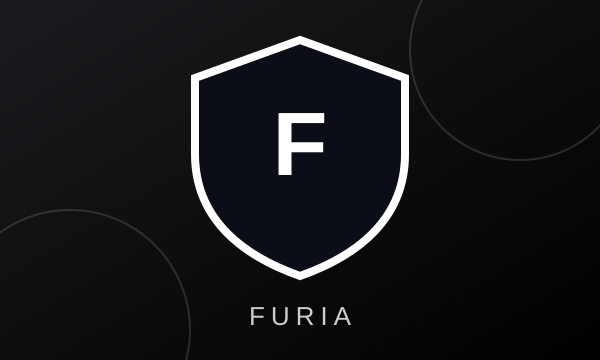
Uma das organizações mais conhecidas do país, com forte presença internacional no Counter-Strike.
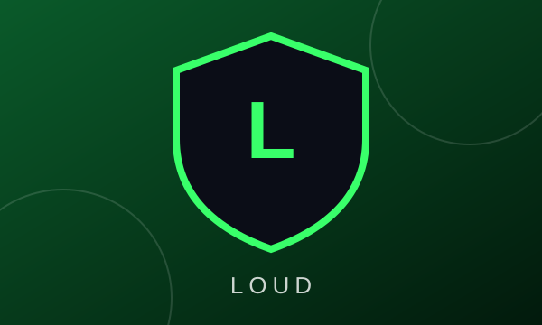
Organização com torcida gigante e conquistas de peso no cenário de Valorant.
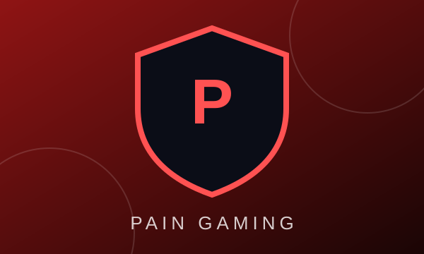
Tradição no League of Legends brasileiro, com participações no cenário mundial.
Treinos diários, revisão de partidas, descanso, alimentação equilibrada e atividade física fazem parte do dia a dia de quem vive dos e-sports.
Tem sugestão de pauta, dúvida ou proposta de parceria? Fale com a gente pelo formulário ou pelos canais ao lado.